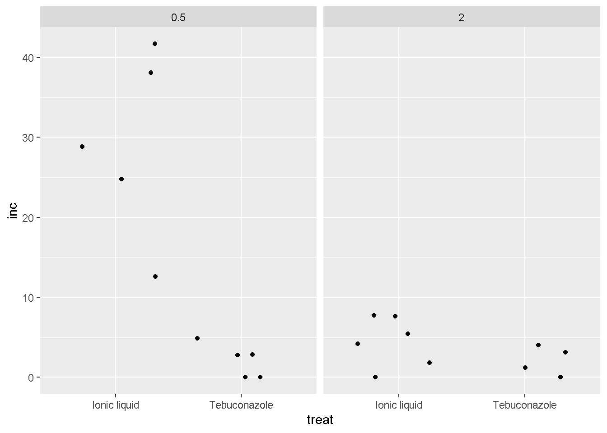
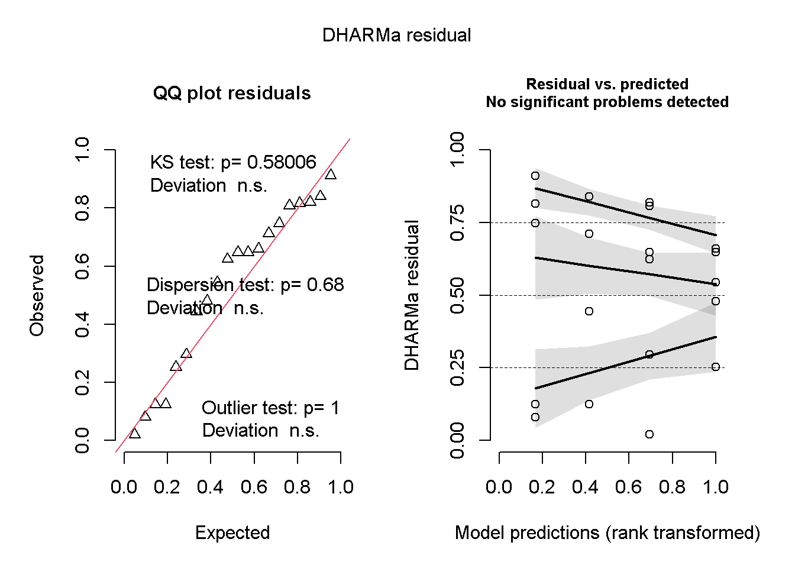
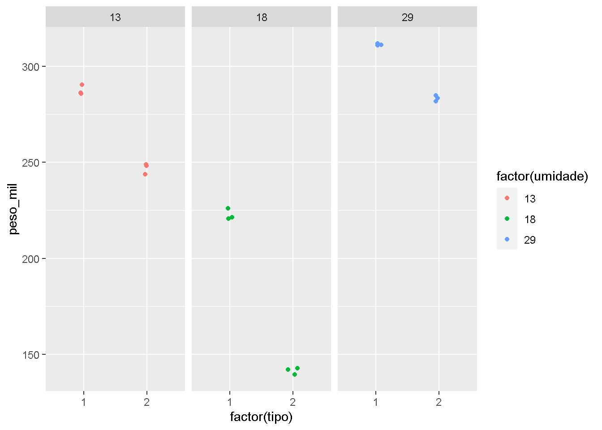
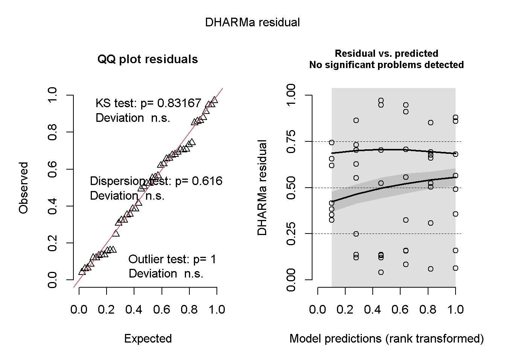
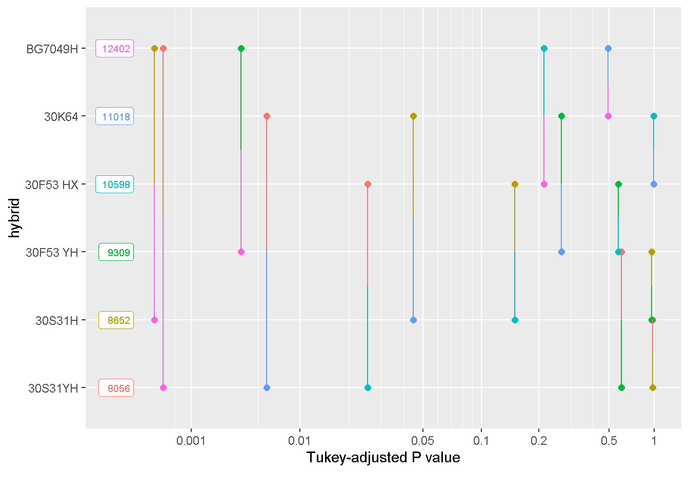

library(tidyverse)
library(readxl)Anvo 2 Fator
Carregando pacotes:
Abrindo conjunto em fatorial: milho:
data <-read_excel("dados-diversos.xlsx", "fungicida_vaso")
data2 <- data|>
mutate(inc = dis_sp / n_sp * 100)
data2 |>
ggplot(aes(x = treat, y= inc))+
geom_jitter()+
facet_wrap(~dose)
Modelo de anova 2 fatores qualitativos:
ml1 <- aov(log(inc+0.5) ~treat*dose,
data = data2)
summary(ml1) Df Sum Sq Mean Sq F value Pr(>F)
treat 1 12.928 12.928 13.980 0.00179 **
dose 1 5.663 5.663 6.124 0.02491 *
treat:dose 1 5.668 5.668 6.129 0.02486 *
Residuals 16 14.796 0.925
---
Signif. codes: 0 '***' 0.001 '**' 0.01 '*' 0.05 '.' 0.1 ' ' 1##libary perfomace premissas
library(performance)
check_normality(ml1)Warning: Non-normality of residuals detected (p = 0.050).check_heteroscedasticity(ml1)OK: Error variance appears to be homoscedastic (p = 0.180).library(DHARMa)
plot(simulateResiduals(ml1))
##estimar medias para cada tratamento
library(multcompView)
library(multcomp)
library(emmeans)
means_ml <- emmeans(ml1, ~ treat|dose,
type = "responses")
means_mldose = 0.5:
treat emmean SE df lower.CL upper.CL
Ionic liquid 3.316 0.430 16 2.404 4.23
Tebuconazole 0.538 0.430 16 -0.374 1.45
dose = 2.0:
treat emmean SE df lower.CL upper.CL
Ionic liquid 1.280 0.393 16 0.448 2.11
Tebuconazole 0.654 0.481 16 -0.365 1.67
Results are given on the log(mu + 0.5) (not the response) scale.
Confidence level used: 0.95 cld(means_ml)dose = 0.5:
treat emmean SE df lower.CL upper.CL .group
Tebuconazole 0.538 0.430 16 -0.374 1.45 1
Ionic liquid 3.316 0.430 16 2.404 4.23 2
dose = 2.0:
treat emmean SE df lower.CL upper.CL .group
Tebuconazole 0.654 0.481 16 -0.365 1.67 1
Ionic liquid 1.280 0.393 16 0.448 2.11 1
Results are given on the log(mu + 0.5) (not the response) scale.
Confidence level used: 0.95
Results are given on the log (not the response) scale.
significance level used: alpha = 0.05
NOTE: If two or more means share the same grouping symbol,
then we cannot show them to be different.
But we also did not show them to be the same. library(agricolae)
cv.model(ml1)[1] 65.04818Fatorial 3 fatores:
milho <- read_excel("dados-diversos.xlsx","armazena")
milho2 <- milho |>
filter(tempo==8)
milho2 |>
ggplot(aes(factor(tipo), peso_mil,
color = factor(umidade)))+
geom_jitter(width = 0.1)+
facet_wrap(~umidade)
## testar interção entre tipo de armazenamento e umidade
m2 <- aov(peso_mil ~ factor(tipo)*factor(umidade),
data = milho2)
summary(m2) Df Sum Sq Mean Sq F value Pr(>F)
factor(tipo) 1 11215 11215 2375.8 3.64e-15 ***
factor(umidade) 2 42814 21407 4534.8 < 2e-16 ***
factor(tipo):factor(umidade) 2 2329 1165 246.7 1.79e-10 ***
Residuals 12 57 5
---
Signif. codes: 0 '***' 0.001 '**' 0.01 '*' 0.05 '.' 0.1 ' ' 1Quando não possui significancia entre a interação, testar as variáveis independentes.
milho3 <- read_excel("dados-diversos.xlsx",
"milho")
m4 <- aov(yield ~ hybrid,
data = milho3)
summary(m4) Df Sum Sq Mean Sq F value Pr(>F)
hybrid 5 105876446 21175289 8.688 1.02e-05 ***
Residuals 42 102371996 2437428
---
Signif. codes: 0 '***' 0.001 '**' 0.01 '*' 0.05 '.' 0.1 ' ' 1check_heteroscedasticity(m4)OK: Error variance appears to be homoscedastic (p = 0.763).plot(simulateResiduals(m4))
medias_m4 <- emmeans(m4, ~ hybrid)
medias_m4 hybrid emmean SE df lower.CL upper.CL
30F53 HX 10598 552 42 9484 11712
30F53 YH 9309 552 42 8195 10423
30K64 11018 552 42 9904 12132
30S31H 8652 552 42 7538 9765
30S31YH 8056 552 42 6942 9170
BG7049H 12402 552 42 11288 13516
Confidence level used: 0.95 #Tuckey
cld(medias_m4) hybrid emmean SE df lower.CL upper.CL .group
30S31YH 8056 552 42 6942 9170 1
30S31H 8652 552 42 7538 9765 12
30F53 YH 9309 552 42 8195 10423 123
30F53 HX 10598 552 42 9484 11712 234
30K64 11018 552 42 9904 12132 34
BG7049H 12402 552 42 11288 13516 4
Confidence level used: 0.95
P value adjustment: tukey method for comparing a family of 6 estimates
significance level used: alpha = 0.05
NOTE: If two or more means share the same grouping symbol,
then we cannot show them to be different.
But we also did not show them to be the same. pwpm(medias_m4) 30F53 HX 30F53 YH 30K64 30S31H 30S31YH BG7049H
30F53 HX [10598] 0.5709 0.9942 0.1494 0.0254 0.2125
30F53 YH 1288 [ 9309] 0.2643 0.9576 0.5999 0.0036
30K64 -420 -1709 [11018] 0.0447 0.0059 0.4938
30S31H 1946 658 2366 [ 8652] 0.9723 0.0003
30S31YH 2541 1253 2962 595 [ 8056] <.0001
BG7049H -1804 -3092 -1384 -3750 -4345 [12402]
Row and column labels: hybrid
Upper triangle: P values adjust = "tukey"
Diagonal: [Estimates] (emmean)
Lower triangle: Comparisons (estimate) earlier vs. laterpwpp(medias_m4)